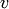
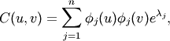
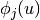
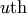

communicability¶
- communicability(G)¶
Return communicability between all pairs of nodes in G.
The communicability between pairs of nodes in G is the sum of closed walks of different lengths starting at node u and ending at node v.
Parameters : G: graph :
Returns : comm: dictionary of dictionaries :
Dictionary of dictionaries keyed by nodes with communicability as the value.
Raises : NetworkXError :
If the graph is not undirected and simple.
See also
- communicability_centrality_exp
- Communicability centrality for each node of G using matrix exponential.
- communicability_centrality
- Communicability centrality for each node in G using spectral decomposition.
- communicability
- Communicability between pairs of nodes in G.
Notes
This algorithm uses a spectral decomposition of the adjacency matrix. Let G=(V,E) be a simple undirected graph. Using the connection between the powers of the adjacency matrix and the number of walks in the graph, the communicability between nodes and  based on the graph spectrum is [R158]

where  is the  element of the
 orthonormal
eigenvector of the adjacency matrix associated with the eigenvalue
orthonormal
eigenvector of the adjacency matrix associated with the eigenvalue
 .
.References
[R158] (1, 2) Ernesto Estrada, Naomichi Hatano, “Communicability in complex networks”, Phys. Rev. E 77, 036111 (2008). http://arxiv.org/abs/0707.0756 Examples
>>> G = nx.Graph([(0,1),(1,2),(1,5),(5,4),(2,4),(2,3),(4,3),(3,6)]) >>> c = nx.communicability(G)